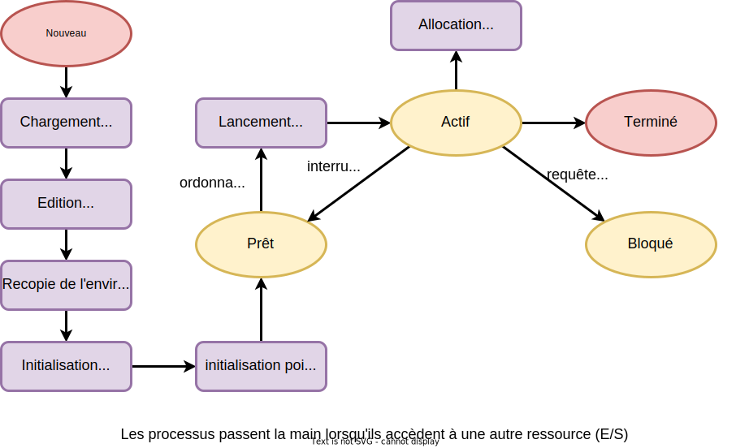
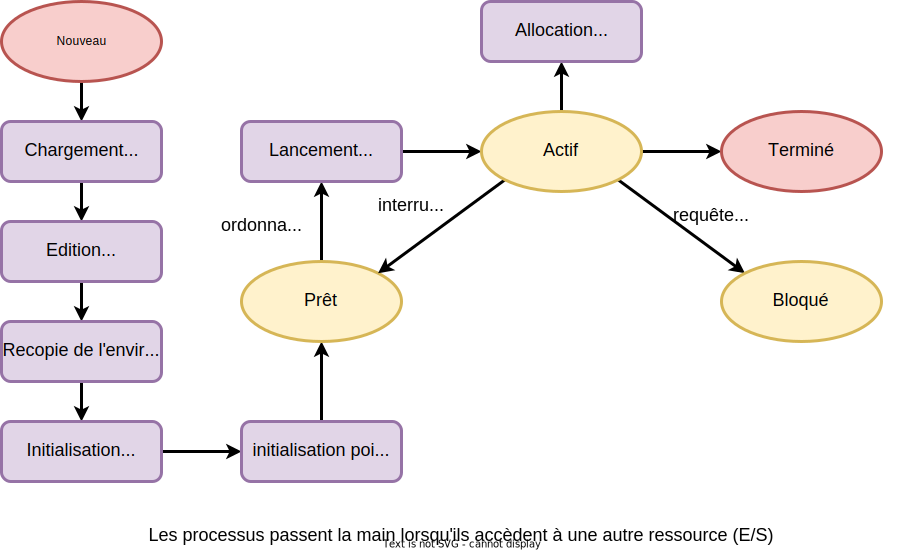

Les systèmes d'exploitation
Gestion des processus et des threads
CentraleSupelec - Université Paris-Saclay - 2025/2026

Programme vs Processus
- Un programme est un ensemble d'instructions (code exécutable)
écrit
dans un langage de programmation et stocké sur un support (disque, SSD, etc.).- le programme est passif $\to$ c'est un fichier sur le disque tant qu’il n’est pas exécuté.
- ne consomme aucune ressource système tant qu’il n’est pas lancé.
- Un processus est un programme en cours d’exécution.
- c'est une entité active, créée et gérée par le système d’exploitation.
- Exemple $\to$ lorsque on ouvre le programme Firefox, il devient un processus.
-
Un programme peut donner naissance à plusieurs processus.
- Exemple $\to$ si on ouvres plusieurs fenêtres de Firefox, on aura plusieurs processus.
-
Un processus est forcément créé par un autre processus
- le système d'exploitation par exemple
- l'appel système
fork() sous UNIX/Linux
Programme vs Processus
Quelques exemples ...
- Dans un OS moderne, plusieurs processus s'exécutent en parallèle :
- les processus de l'OS (gestion du réseau, gestion des utilisateurs, ...)
- le shell (toute l'interface graphique $\rightarrow$ plusieurs processus).
- l'IDE VSCode avec lequel je tape ce cours.
- le navigateur Chrome qui me permet de visualiser ce cours.
-
Commande
top sous Unix/Linux $\to$ afficher en temps réel la liste des processus actifs et l’utilisation des ressources du système (CPU, mémoire, etc.).
Rôle de l'OS
- Création et suppression de processus
- Programme $\rightarrow$ processus
- Munir le programme des informations nécessaires pour son exécution
- Suspension et reprise
- Multiprogrammation $\rightarrow$ interrompre et reprendre les processus
- Gestion de la mémoire où sont stockées les processus interrompus
- Communication et synchronisation
- Partage de données entre plusieurs processus
- Consistance de l'état de la mémoire
Rôle de l'OS
- Création et suppression de processus
- Programme $\rightarrow$ processus
- Munir le programme des informations nécessaires pour son exécution
- Suspension et reprise
- Multiprogrammation $\rightarrow$ interrompre et reprendre les processus
- Gestion de la mémoire où sont stockées les processus interrompus
- Communication et synchronisation
- Partage de données entre plusieurs processus
- Consistance de l'état de la mémoire
Création de processus
- Lorsqu'un utilisateur lance un programme.
-
Lorsqu'un processus engendre un autre processus:
-
sous UNIX/Linux $\rightarrow$ 2 appels système
fork pour créer un processus à partir du processus courant (le processus est dupliqué)exec pour remplacer le processus courant par un autre processus
-
sous WINDOWS
createprocess pour créer un processus (le processus courant est conservé)
-
sous UNIX/Linux $\rightarrow$ 2 appels système
les structures (PCB), et le met dans la file des processus prêts à exécuter.
L'espace mémoire d'un processus
ses registres, ses descripteurs de fichiers, etc.
- Code exécutable en lecture seule
(taille connue) - Variables/Constantes globales
(taille connue) - Pile pour gérer les contextes et les variables temporaires (taille inconnue)
- Le TAS ou la Zone d'allocation dynamique
de mémoire (taille inconnue)
Process Control Block - PCB
Structure de données contenant des informations utilisée par le système d’exploitation pour définir et gérer un processus.
- Information mémoire
- Données d'ordonnancement
- Périphériques alloués
- Information d'usage
- État du processus/processeur
Tout ce qui doit être sauvegardé
pour interrompre puis
reprendre l'exécution d'un processus.
Rôle de l'OS
- Création et suppression de processus
- Programme $\rightarrow$ processus
- Munir le programme des informations nécessaires pour son exécution
- Suspension et reprise
- Multiprogrammation $\rightarrow$ interrompre et reprendre les processus
- Gestion de la mémoire où sont stockées les processus interrompus
- Communication et synchronisation
- Partage de données entre plusieurs processus
- Consistance de l'état de la mémoire
Cycle de vie du processus


 



Suspension de l'exécution
- Le processus en exécution laisse la main si:
- son quantum a expiré $\rightarrow$ état Prêt
- crée un processus fils (
fork ) $\rightarrow$ état Prêt - fait une demande d'E/S $\rightarrow$ état Bloqué
- exécute
wait $\rightarrow$ état Bloqué

Commutation de processus

Rôle de l'OS
- Création et suppression de processus
- Programme $\rightarrow$ processus
- Munir le programme des informations nécessaires pour son exécution
- Suspension et reprise
- Multiprogrammation $\rightarrow$ interrompre et reprendre les processus
- Gestion de la mémoire où sont stockées les processus interrompus
- Communication et synchronisation
- Partage de données entre plusieurs processus
- Consistance de l'état de la mémoire
Actions de l'OS
-
Mémoire $\to$ chaque processus a son propre espace mémoire
- pas de problème de consistance mémoire/processeur
-
Verrous (
locks ) $\to$ un processus verrouille l'accès à une ressource- gestion de l'accès à une section critique
- file d'attente pour l'accès à la ressource
-
Outils et Algorithmes de synchronisation
- l'OS propose différents outils de synchronisation
- files de messages, mémoire partagée, tubes (pipes), sockets, etc.
- voir cours Synchronisation des processus (prochain chapitre)
Thread vs Processus
- Un thread est l'unité d'exécution de base
d'un processus, décrit par son point d'exécution
et son état interne (registres, pile, ...).- un processus peut avoir plusieurs threads
- les threads partagent le code et les données
du processus (l'espace mémoire du processus) - chaque thread a sa propre pile et partage les mêmes variables globales avec les autres threads
- Un thread est également appelé processus léger.
-
Exemple $\to$ un navigateur web
- le navigateur entier $=$ un processus.
- chaque onglet ou tâche $=$ un thread à l'intérieur du processus.
Utilisation des Threads
- Le Thread permet la gestion de plusieurs traitements en parallèle
dans le même processus.
-
création d'un thread $\equiv$ exécuter une fonction
en parallèle par un appel système :
sous Unix $\to$pthread_create()
sous Windows $\to$CreateThread() - le passage de ressources entre threads facilité.
- les variables dans le contexte du même processus.
-
création d'un thread $\equiv$ exécuter une fonction
-
Performances améliorées par rapport aux processus :
- création plus rapide;
- changement de contexte plus rapide;
- partage du code $\to$ gain de place en mémoire;
- réactivité $\to$ le processus s'exécute pendant qu'un thread est en attente.
Multiprogrammation vs temps partagé
-
Multiprogrammation
- le but $\to$ maximiser l'utilisation du CPU (éviter qu'il reste inactif)
- la capacité d'un OS à garder plusieurs processus en mémoire.
-
Temps partagé (time sharing)
- le but $\to$ améliorer la réactivité et le partage équitable du CPU.
- le CPU est partagé entre plusieurs processus.
- chaque processus utilise le CPU pendant un quantum de temps.
-
l'OS alterne rapidement entre processus
$\to$ donner l'illusion qu'ils s'exécutent simultanément
-
L'OS gère ces mécanismes via :
- un ordonnanceur (scheduler) décidant quel processus obtient le CPU
- des files d'attente de processus (prêt, actif, et bloqué),
- des interruptions permettant de reprendre le contrôle à la fin d'un quantum.
L'ordonnancement
- L'ordonnancement est le mécanisme par lequel l'OS décide quel processus obtient le CPU et pendant combien de temps (quantum de temps).
-
Dans l'analyse d'un ordonnacement, on ne s'intéresse pas à la durée totale
d'un processus ... mais au temps pendant lequel il va garder le CPU :- jusqu'à ce qu'il termine (fin d'éxécution)
- jusqu'à ce qu'il fasse une E/S ($\to$ à l'état bloqué)
- jusqu'à ce que l'OS décide que ce n'est plus son tour (fin de quantum, $\to$ à l'état actif)
- Le remplacement d'un processus en cours d'exécution a un coût
(commutation de contexte)- exécution de la routine d'ordonnancement
- sauvegarde du contexte (registres + PC)
- chargement d'un nouveau contexte
Les critères d'un ordonnancement
- être équitable (fairness) vis-à-vis des processus ;
- maximiser l'utilisation globale du processeur (efficace) ;
- avoir un comportement le plus prévisible possible ;
- permettre un maximum d'utilisateurs interactifs (réactif) ;
- minimiser le surcoût (overhead) lier à la parallélisation ;
- assurer une utilisation maximale des ressources ;
- gérer convenablement les priorités.
Les critères d'un ordonnancement
Le taux d'utilisation
Proportion de temps pendant lequel le CPU est utilisée
$taux=\frac{5}{6}=83\%$ $\rightarrow$ à maximiser
Les critères d'un ordonnancement
Le débit
Nombre moyen de processus traités par unité de temps
$nb=\frac{3}{6}=0.5$ $\rightarrow$ à maximiser
Les critères d'un ordonnancement
Le Temps d'attente
Temps total passé par tous les processus dans la file prêt
$moyenne=\frac{1+2+5}{3}=2.66$ $\rightarrow$ à minimiser
Les critères d'un ordonnancement
La Rotation
Durée d'un processus
$\rightarrow$ temps de réponse du processus
($date\_terminaison$ $-$ $date\_creation$)
$moyenne=\frac{5+6+6}{3}=5.66$ $\rightarrow$ à minimiser
Ordonnancement
préemptif vs non préemptif
-
Ordonnancement préemptif (avec réquisition)
-
l'OS peut interrompre un processus en cours pour en exécuter un autre :
- quand le quantum est écoulé
- lorsqu'un processus plus prioritaire demande à utiliser le CPU
- assure une meilleure réactivité
- indispensable pour les systèmes temps réel ou les systèmes interactifs.
-
l'OS peut interrompre un processus en cours pour en exécuter un autre :
- Ordonnancement non préemptif
-
un processus garde le CPU jusqu'à ce que :
- il se termine
- il se bloque (en attente d'une ressource)
- plus simple, mais moins réactif.
-
un processus garde le CPU jusqu'à ce que :
Ordonnancement
préemptif

Ordonnancement
non préemptif

De nombreuses stratégies
FIFO sans préemption

- Principe:
- premier arrivé, premier servi.
-
Avantages :
- Simple à implémenter
- Équitable dans l'ordre d'arrivée
-
Inconvénients :
- Peu efficace $\to$ des processus ont "longtemps" le processeur
- Peu réactif $\to$ des processus peuvent attendre longtemps
De nombreuses stratégies
Plus court d'abord

- Principe :
- priorité au processus le plus court
-
Avantages :
- Réactif $\to$ avantage aux petits processus
- Optimal sur le temps d'attente moyen
-
Inconvénients :
- Pas efficace $\to$ les processus ont moins le processeur s'il y a beaucoup d'E/S
- Non équitable $\to$ on peut avoir une famine des gros processus
De nombreuses stratégies
Round-Robin (FIFO préemptif)

- Principe :
- FIFO avec quantum de temps
-
Avantages :
- Équitable $\to$ tout le monde a le processeur
- Réactif $\to$ les processus n'attendent pas
-
Inconvénients :
- Temps d'attente moyen plus élevé
- Beaucoup de commutations $\rightarrow$ surcoût!
De nombreuses stratégies
Files de priorités
- Plusieurs files d'attente
- La durée des quantums peut dépendre de la file
- favorise le temps de réponse des processus systèmes
- Comment choisir la priorité ?

De nombreuses stratégies
Files de priorités dynamiques
-
La priorité d'un processus peut être modifié par l'OS
- par exemple sortie d'attente I/O
- attente longue en file basse priorité
- Utilité $\to$ Windows NT, MacOS X, Linux
- Notion de classe de priorités
Exemple - Solaris
OS des machines Sun entre 1993 et 2000
Principe
- Quantum de temps selon priorité (0 = priorité max)
- Priorité modifiée à la fin du quantum ou après une E/S
- prioritaire $\rightarrow$ grand quantum
- quantum consommé $\rightarrow$ priorité augmentée
- E/S $\rightarrow$ priorité diminuée
Exemple - Windows XP et après
Principe
- Priorité + Round Robin
- gérée au niveau des threads uniquement
- 32 niveaux de priorité
- ordonnancement préemptif par niveau de priorité
-
Priorité dynamique
- baissée à la fin du quantum
- remontée après chaque E/S $\rightarrow$ interface graphique plus réactive!
Exemple - Linux, MacOS X
Principe
- 2 algorithmes:
- Tâches temps réel $\to$ préemptif selon priorité, FIFO ou RR par priorité
- Autres tâches $\to$ temps partagé équitable
-
Système de crédits
- chaque processus dispose d'un crédit = sa priorité
- le processus le plus riche l'emporte (préemptif)
- perte de 1 crédit à la fin du quantum
- si aucun processus prêt n'a de crédit, tous les processus sont re-crédités
$\to$ $credit^{'}$ $=$ $credit/2$ $+$ $credit_{init}$
Synthèse
- Un processus est un programme exécuté par un processeur
- L'OS stocke les informations sur les processus dans un PCB
- L'OS assure la consistance des données en mémoire
- Les threads partagent le code, l'environnement et le tas
- Ordonnancement $=$ choix d'un processus à exécuter
-
Algorithmes d'ordonnancement :
- FIFO
- Plus court d'abord
- Round-Robin